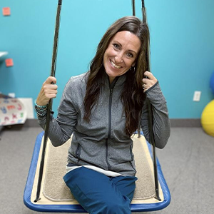
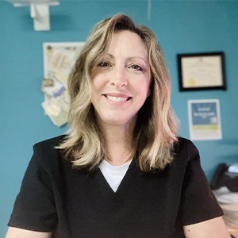
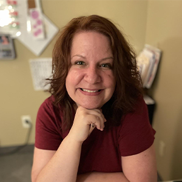
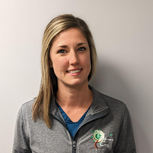
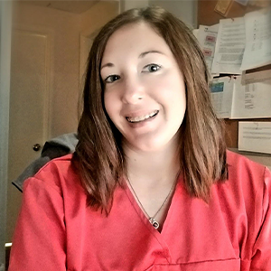
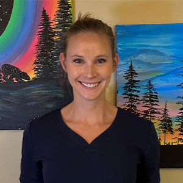
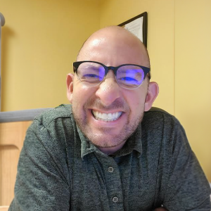

Meet The Team
The Vision Integration Team is a dedicated and passionate team of optometrists, vision therapists and occupational therapists who are working to educate and advocate for YOU!

Dr. Steven Curtis, OD, FCOVD, FNORA, FCSO
Dr. Steven J. Curtis is in private practice in Columbus Ohio where he provides general, developmental, and neuro-optometric vision services. He is on the medical staff of the OhioHealth Rehabilitation Hospital and the professional soccer team, Columbus Crew. Dr. Curtis is a fellow of the College of Optometrists in Vision Development, the Neuro-Optometric Rehabilitation Association, and the College of Syntonic Optometry. Dr. Curtis’ favorite area of patient care is persistent post-concussion vision disturbances. He has published several peer-reviewed articles in this area and continues his research on a unique protocol of subcortical multi-sensory training. Dr. Curtis was recently awarded the H. Riley Spitler Award for recognition of his scientific and research expansion in the field of syntonic phototherapy. In 2021 he founded EyeLux Integrations, manufacturers of advanced syntonics technology. When not doing optometry, Dr. Curtis enjoys playing music, family, and travel.
Dr. Jacob Terry, OD, MS
Dr. Terry was born in Calvert County, Maryland and raised in Lancaster county, PA. He obtained his undergraduate degree at Salisbury University with a Major in Biology and Minor in Chemistry. Dr. Terry participated in Division 3 baseball for the Seagulls. His position on the field was the outfield and he had a strong passion for bunting and playing “small-ball.” His love for the game inspired research for his Masters in Vision Science, where he analyzed visual perceptions in baseball batters. Dr. Terry graduated from The Ohio State College of Optometry in May 2022. Before becoming an optometrist, Dr. Terry had two part-time jobs; he was a chef as well as a gardener. In his free-time, he enjoys exploring the outdoors and living an active lifestyle. His goal is to help every patient gain the edge in sports, school or life in general by maximizing their visual potential.
Our Staff
Our staff is ready to support you throughout your vision therapy journey.
-

Shelley Ullom, MOT, OTR/L
Shelley Ullom received her Bachelor’s Degree from Ohio University in 2001 and Master’s Degree in Occupational Therapy at the University of Indianapolis in 2004. Prior to relocating to Columbus in 2007, Shelley resided in Indianapolis where she gained extensive experience working with the pediatric population utilizing sensory integration and the tool of Hippotherapy (Horses!) at the Children’s Theraplay Foundation. Since moving to Columbus, Shelley has worked with pediatric patients in multiple settings, from outpatient clinics to school systems, and was beyond excited to join forces with Dr. Curtis in 2008 at the Vision Performance Center. In addition to furthering her expertise in the areas of sensory and visual processing, vestibular rehab, and primitive reflexes, Shelley enjoys coupling her love for yoga with patient care. She has several certifications in teaching children’s yoga as well as adult TBIs via Love Your Brain Yoga. She believes that movement is the key to learning at any age and loves to foster her patients’ paths of self-discovery and growth in a fun, creative and positive environment. Shelley resides in Clintonville with her husband (Joel), their two children (Maggie & Carter) and their fun-loving sheepadoodle (Charlie). In her spare time, you can find her enjoying time with family and friends, doing yoga, hiking, shopping, exploring new travel destinations, sipping a good cup of chai, watching her kids play sports, and cheering on the Buckeyes!
-

Holly Riggs, OTR,L
Holly Riggs graduated from The Ohio State University College of Allied Medical Professions in 1993. She is proud of her Buckeye heritage, having lived in Ohio all her life except when wanderlust took her to Texas, Florida, and England. As a practicing Occupational Therapist in Texas, she first learned her love of working with adults. Returning to Ohio, she partnered with The Bureau of Worker’s Compensation to set up onsite work-hardening programs to help injured workers successfully return to their jobs. From here, she specialized in acute care, further developing her therapy skills and love for helping adults return to their maximum potential. It was in 2009 that Holly discovered her passion for vision and brought Low Vision therapy to adults in the home-setting. In 2014, she expanded her role at The Vision Performance Center and joined the Neuro-Vision Rehabilitation team - since then, Holly has not looked back! She uses her expertise in the areas of visual processing, sensory integration and vestibular rehab to help those with concussion, stroke, and other neurological diagnoses return to active lifestyles. Holly is also an expert in Sports Vision Therapy, working with athletes in a variety of sports from high school to the professional level. She can’t describe her job without using words like, “life-changing”, “totally fulfilling” and “best job ever”. Holly lives with her husband, Mike, in Westerville, Ohio and their wonderful dog, Beckham. She has two grown daughters, Mae and Ellise, who are pursuing college degrees. In her spare time, you’ll find Holly spending time with her family, gardening, or volunteering in the community. She is an avid soccer fan, cheering on her two favorite teams, The Columbus Crew and Manchester City F.C.
-

Sarah Pyle OTA/L
Sarah Pyle was born in Beloit Wisconsin, but has lived in various parts of Ohio since she was 5 years old. Following in her eldest sister’s footsteps, who is an Occupational Therapist, in 1999 Sarah has spent her time as an OTA/L working with both the adult and pediatric population in many different settings and feels very fortunate that she has always loved what she gets to do for a living. She started working here in the fall of 2008 transitioning from part time to full time over the years. She loves how unique and rewarding her work has always been here. She enjoys having a variety of ages and types of diagnosis to treat and finding ways to help her patients achieve their goals. Sarah currently resides in Westerville with her husband Ben. Together they have 2 kids (Will and Bekah), mulitple cats and a dog. In her spare time, you can find Sarah reading or listening to music or podcasts on her patio; watching her kids perform in theater/band events; watching college football (GO OSU/ Big Ten); planning her next vacation; trying new IPA and wheat beers; napping; and spending time with the friends and family she was blessed with in this life.
-

Emily Schrickel, OTA/L
She has now been working in vision rehabilitation for the last 5 years. This is most definitely her favorite part of her career so far! Emily is grateful to be part of such a dedicated and compassionate community of professionals. The best part is the unique collaboration amongst optometrists and therapists to meet each patient’s individual needs during their time in therapy. She feels it is important to view each patient as a person, not just the injury or diagnoses. Educating others, especially patients and their families is her favorite part of the job!
-

Tiffany Chutes COTA/L
Tiffany Chutes graduated with an Associate’s Degree in Applied Science from Owens Community College in 2010. She started her career off as an Occupational Therapy Assistant in Skilled Nursing Facilities, Home Health, and then joined the Vision Performance Team in February 2022. Tiffany is very grateful to be a part of such an amazing team. Tiffany loves working with the various diagnosis, ages, and helping guide patients through their multisensory treatment. Tiffany was born and raised in Delphos, Ohio, and moved to the Columbus area after college where she met her husband Joe. She currently resides in Marysville, Ohio with her husband Joe and two sons, Brantley and Wyatt, and they share their home with their two dogs, Baya and Diesel. In her free time, Tiffany loves spending time with her family, having cookouts, watching movies, riding her bike with her kids, and gardening.
-

Chelsea Lodge, COTA/L
Chelsea received her Associates degree as an Occupational Therapy Assistant from Shawnee State University in 2012. She was born and raised in Columbus, and now resides here with her husband and three children. Since graduating, Chelsea has worked in LTC/SNFs, Adult Day Centers, and more recently, for a home health organization doing school based therapy. She has enjoyed treating and gaining experience in all of these fields, and is very much looking forwards to assisting clients through a unique multisensory treatment at the Vision Performance Center. She believes that patient centered treatment is the best form of treatment, and loves collaborating and coordinating individual treatment plans to provide patients with their highest quality of life. Chelesa loves staying active with her family, listening to podcasts while cleaning/ organizing, and letting her creativity flow through various outlets.
-

Stacey Gonya (Office Manager)
Stacey Gonya was born and raised in Columbus Ohio. After graduating from the American Institute of Alternative Medicine, Stacey worked as a licensed massage therapist. Most of his massage career was spent in various medical settings including chiropractic offices and wellness clinics. In 2011 Stacey graduated from Clark State College in Springfield Ohio with an Associate’s degree in Applied Sciences going on to earn his physical therapy assistant license. The geriatric population was his primary focus, helping patients regain their function and independence, thus bettering their quality of life. Stacey joined the team in 2019 and hasn’t looked back. Four years later, he is still grateful to be a part of such a unique and specialized clinic. Although he does not have a clinical role, he really enjoys building a rapport with the patients and watching them get better. When not at the office, Stacey enjoys spending time with his wife, Jen and their two kids, Oliver and Finn. The newest addition to the family is a Boston terrier, Georgia Blue, what she lacks in manners she makes up for in personality. Playing cards, exercising, watching most any sporting event, baking and spending time in nature are some other activities that put a smile on his face.
Say Hello
Contact us today and learn how our team can help. Chatting is free, improved vision is priceless.